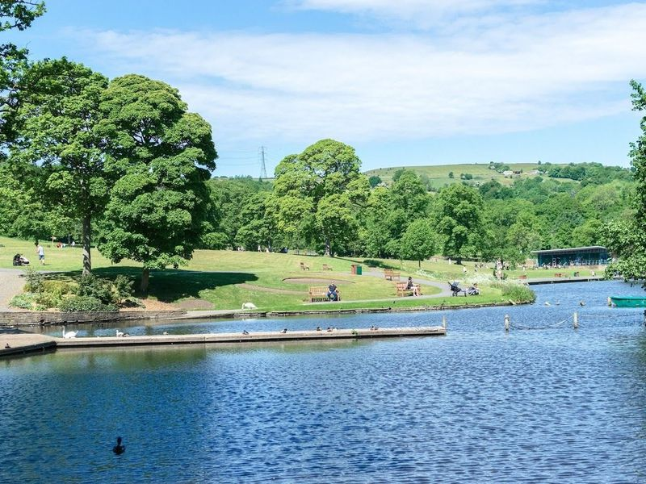
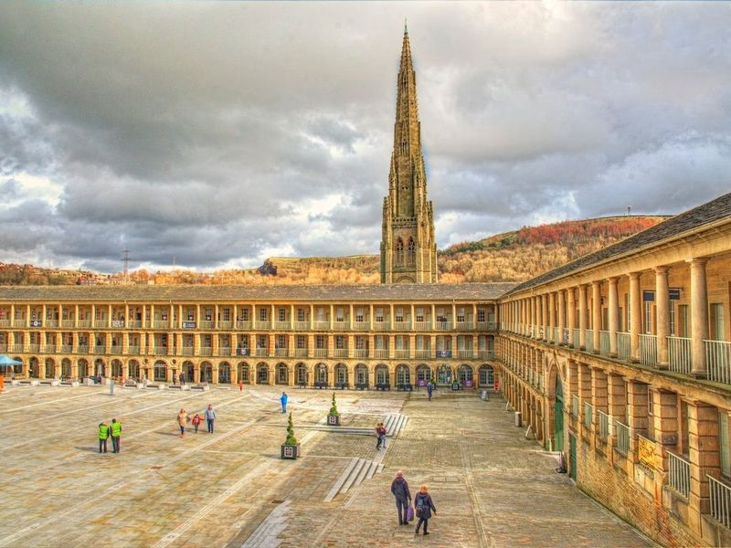
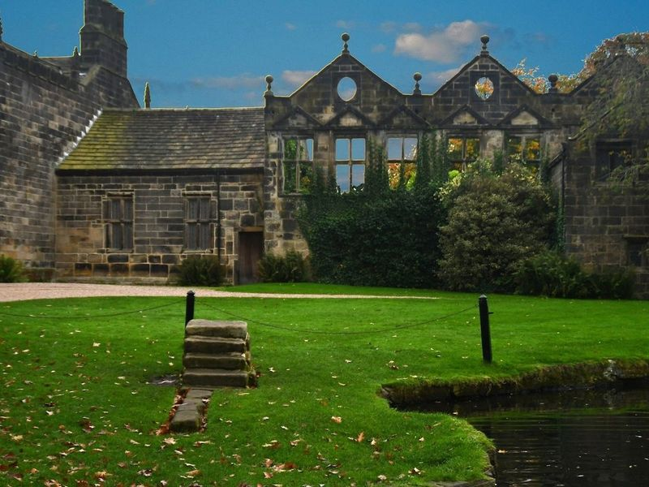
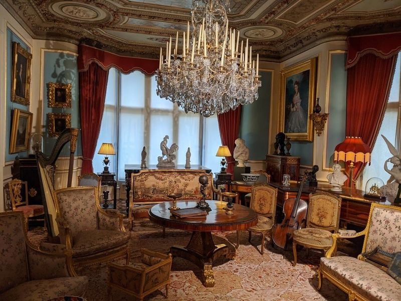
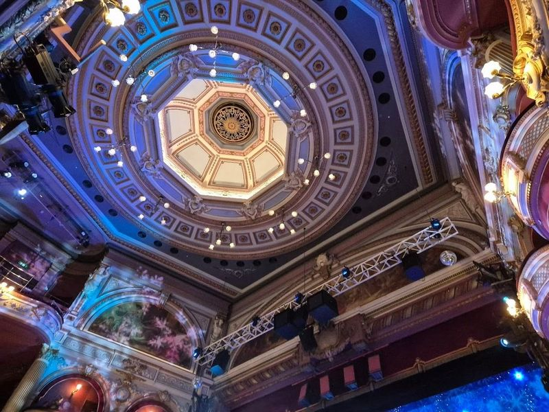
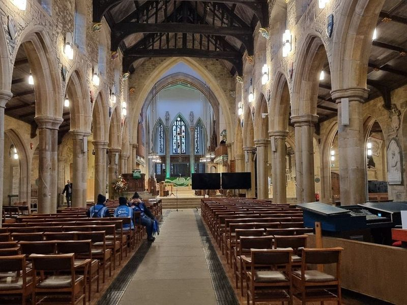
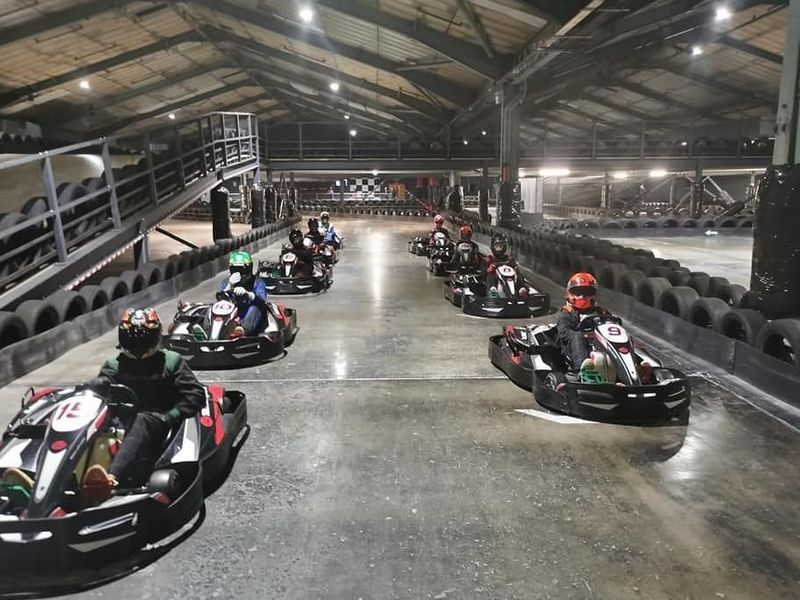
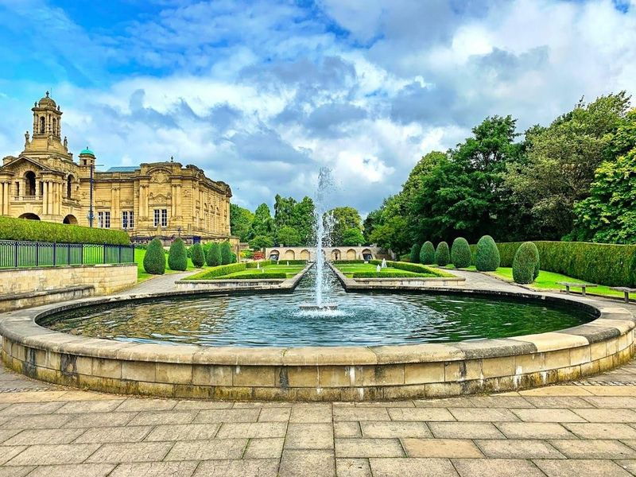
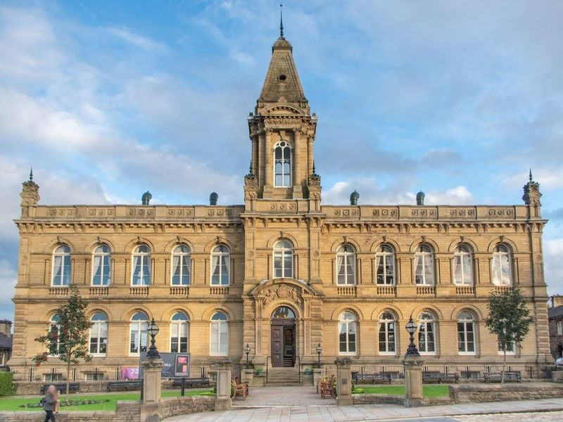
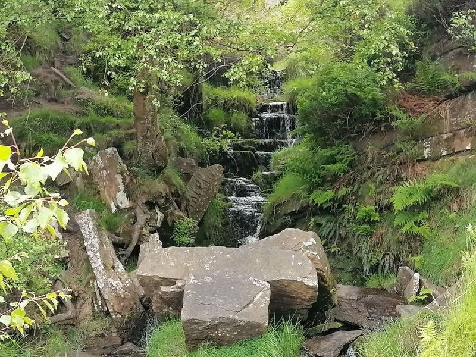

Explore Saltaire
A Brief History
Saltaire was built from 1851 when Bradford industrialist Titus Salt moved his alpaca mills beside the Leeds and Liverpool Canal and the Aire valley to escape polluted city air. Terraced houses, a dining hall, and the Italianate Salts Mill formed a model village governed by paternal rules on alcohol and recreation. The settlement survived textile decline through adaptive reuse of the mill for art and commerce, becoming a UNESCO example of planned Victorian industry.
Attractions Map
Top Sights & Activities

Shibden Park
Shibden Park, located in West Yorkshire, is a picturesque and historically significant destination. The park features lush green spaces, floral displays, and serene lakes. travellers can explore the Shibden Hall, a historic house dating back to 1420. The park offers engaging activities such as boating on the lake, riding a miniature train, and enjoying the kids' play area. It's also dog-friendly, making it an public space for families and nature enthusiasts alike.

The Piece Hall
The Piece Hall in Halifax is a remarkable 18th-century cloth hall that has been transformed into a hub of history, entertainment, and commerce. As the only surviving Georgian cloth hall globally, it stands as a testament to the region's textile trade heritage. Today, travellers can explore historical exhibits while enjoying an array of shops, bars, and restaurants within its classical gallery arcades. The venue also hosts live music events featuring acclaimed artists and bands.

National Trust - East Riddlesden Hall
East Riddlesden Hall, located in Keighley, is a 17th-century manor house surrounded by trees and a large pond. Managed by the National Trust, it offers travellers a glimpse into the past with its period furnishings and well-maintained interior that reflects the 1600s. The formal gardens provide a serene setting for leisurely strolls.

Cliffe Castle
Cliffe Castle, part of Bradford District Museums and Galleries, was constructed in the 1880s as the residence of Henry Isaac Butterfield, a wealthy Victorian textile magnate. The opulent house showcased international art and French decor and hosted lavish social gatherings. The museum now features furnished rooms, costumes, fossils, and domestic artifacts from that era.

Alhambra Theatre, Bradford
The Alhambra Theatre in Bradford is a historic gem, boasting an impressive 1,400-seat capacity and serving as a hub for performing arts. Since its grand opening in 1914, this Edwardian theatre has hosted an array of large touring productions and international dance events, making it a must-visit destination for culture enthusiasts. The venue showcases everything from ballet to comedy and even the beloved annual pantomime, ensuring there's always something exciting on stage.

Bradford Cathedral
Bradford Cathedral, a medieval Church of England cathedral, boasts original nave arcades and notable stained-glass windows. Dating back to the 7th century, it is the city's oldest place of worship. The cathedral welcomes travellers to explore its garden space and offers free entry for those interested in delving into its 500 years of history. Additionally, it hosts various events such as traditional Christmas concerts and art exhibitions.

Teamsport Go Karting Bradford
Located in Bradford, Teamsport Go Karting offers a state-of-the-art indoor karting track with features like a flyover and electronic timing. The multilevel track promises an action-packed day filled with speed and excitement for thrill-seekers. travellers can expect helpful staff who ensure a smooth registration process and clear safety instructions before hitting the track.

Lister Park
Lister Park, located just a mile from Bradford's city center, offers a wide range of activities for families and art enthusiasts alike. The park features a boating lake, tennis and bowls facilities, a playground for kids, and a delightful café serving delicious ice cream. travellers can also explore the botanical gardens with winding geological trails and the serene Mughal Water Garden inspired by Islamic and Indian architecture.

Victoria Hall
Victoria Hall, located in Settle, is a historic and culturally significant venue that has been hosting events since 1853. As the oldest surviving music hall in the world, it offers a variety of entertainment including live music, theatre performances, and community gatherings. The hall is also a popular choice for weddings due to its unique and setting within the UNESCO World Heritage Site of Saltaire.

Bronte Waterfall
Bronte Waterfall is a natural attraction located in Haworth, known for its picturesque setting and varying water flow based on weather conditions. travellers can access the waterfall via the Bronte Waterfall Walk, a moderately easy 3-mile trek from the village center. The walk offers scenic views and encounters with local wildlife, making it an ideal experience for nature enthusiasts.